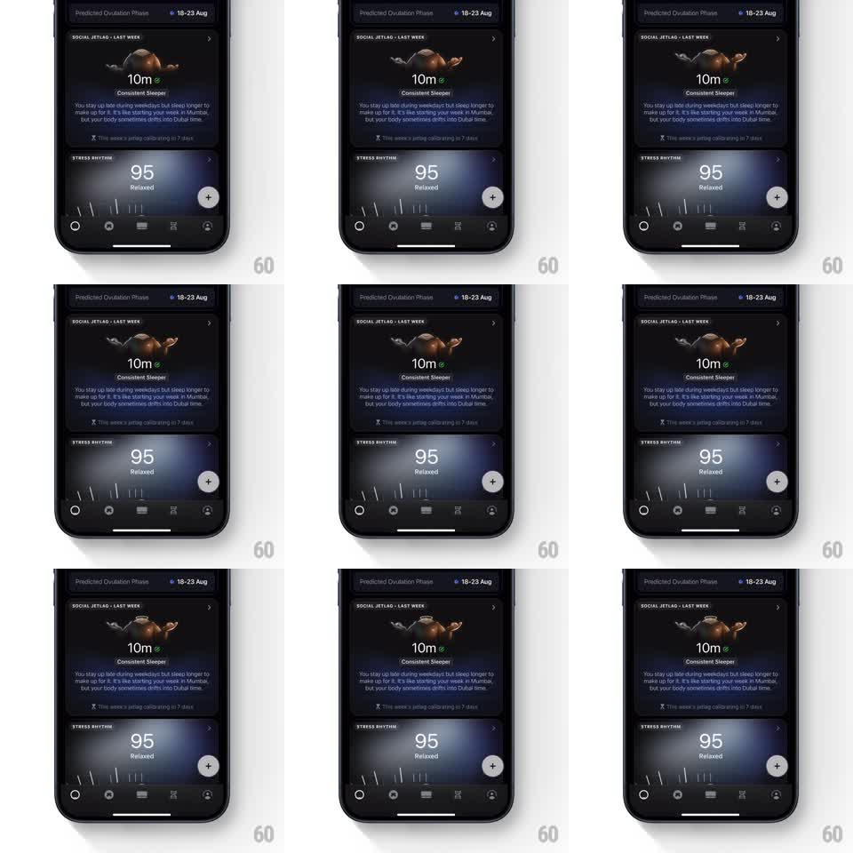

Media
Frame-by-frame

Rebuild this animation 1:1: Ultrahuman's consistent-sleeper card - a 3D mascot floats in a calm, balanced idle inside the Social Jetlag card under the "10m - Consistent Sleeper" verdict.

Rebuild this animation 1:1: Ultrahuman's consistent-sleeper card - a 3D mascot floats in a calm, balanced idle inside the Social Jetlag card under the "10m - Consistent Sleeper" verdict. ## Integration Integration: stack-agnostic spec - springs given as stiffness/damping, timed motions as duration + curve; map every value to your framework and animation library of choice. ## Scene Dark dashboard: "SOCIAL JETLAG - LAST WEEK" card holding the mascot render, "10m" + "Consistent Sleeper" label, explainer copy; Stress Rhythm card below. Only the mascot animates. ## Motion spec Pattern: serene idle loop, ~4s. - The mascot bobs gently (+-4px vertical, ~2s half-cycle, ease-in-out) as if floating in calm water. - A slow full-body sway (+-8deg rotation) rides on a slightly offset period so the motion never visibly repeats. - Small secondary motion (a limb drift) rounds out the loop; lighting stays soft and even. ## Calibration - Offset the bob and sway periods (e.g. 2s vs 3.5s) so the combination feels organic. - Everything is small-amplitude; this is composure, not play. ## Reduced motion Static mascot. ## Don't miss - Keep the same card layout as the late-sleeper variant - only the mascot's character changes; that contrast is the product's voice. - The mascot stays centered in its stage; drifting toward an edge reads as a physics bug.